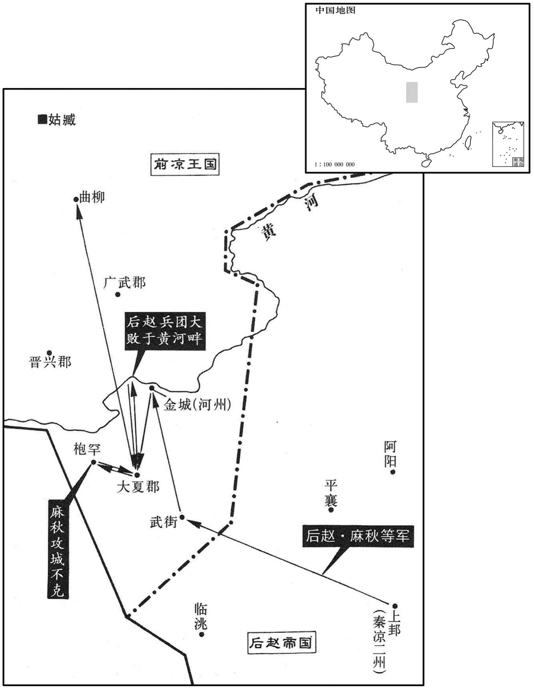
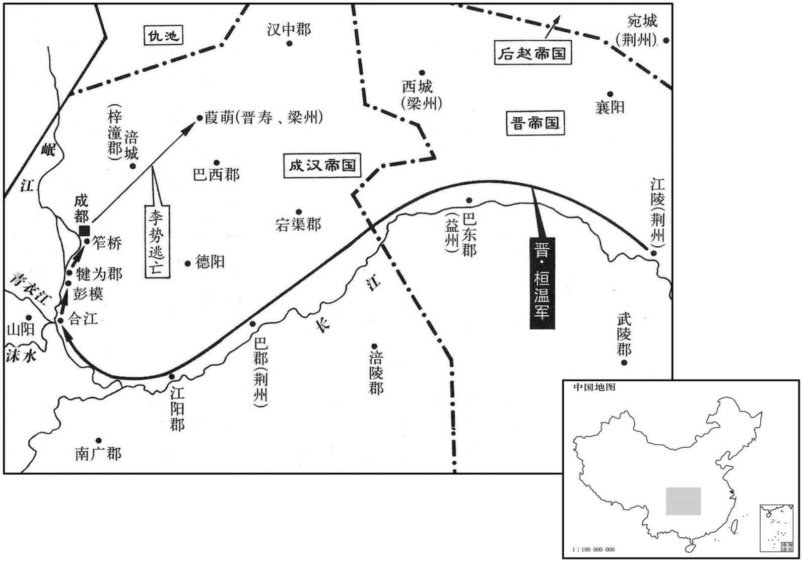

公元346年资治通鉴：本年记事、原文与白话对照
按原书编年位置阅读；追叙和史论不等于本年发生的事件。白话采用所据译本，缺译不以生成译文补齐。
卷97 · 本年记事
公元346年 · 晋孝宗穆皇帝永和二年
二年〔（丙午、三四六）〕
本年事件索引（现代整理）

本年形势与背景参考图

本年形势与背景参考图
春，正月，丙寅，大赦。
春季，正月，丙寅（初一），晋大赦天下。
己卯，都乡文穆公〔【章：十二行本「公」作「侯」；十一行本同；孔本同。】〕何充卒。充有器局，临朝正色，以社稷为己任，所选用皆以功效，不私亲旧。
己卯（十四日），都乡文穆公何充死。何充兼具才识和度量，上朝时面容端肃，以治国为己任，所选用的人都有所成就，不为亲朋故友徇私情。
初，夫余居于鹿山，〔夫余在玄菟北千余里，鹿山盖直其地。杜佑曰：夫余国有印，文曰「濊王之印」，国有故城，名濊城，盖本濊貊之地。其国在长城之北，去玄菟千里，南与高丽、东与挹娄、西与鲜卑接。〕为百济所侵，〔东夷有三韩国：一曰马韩，二曰辰韩，三曰弁韩。马韩有五十四国，百济其一也，后渐强大，兼诸小国；其国本与句丽俱在辽东之东千余里。隋书曰：百济出自东明，其后有仇台者，始立其国，渐以强盛，初以百家济海，因号百济。杜佑曰：百济南接新罗，北拒高丽千余里，西限大海，处小海之南。〕部落衰散，西徙近燕，而不设备。〔近，其靳翻。〕燕王皝遣世子儁帅慕军、慕容恪、慕舆根三将军、万七千骑袭夫余。〔帅，读曰率。〕儁居中指授，军事皆以任恪，遂拔夫余，虏其王玄及部落五万余口而还。皝以玄为镇军将军，妻以女。〔妻，千细翻。〕
当初，扶馀部居住在鹿山，遭百济的侵拢，部落衰败离散，便向西迁徙靠近前燕国，但不设防备。前燕王慕容派世子慕容俊率慕容军、慕容恪、慕舆根三位将军、骑兵共一万七千人进攻扶馀部。慕容俊居中指挥，具体军务都委派给慕容恪，于是攻克扶馀，掳获扶馀王玄和部落民众五万多人返回。慕容任玄为镇军将军，把女儿许配给他为妻。
二月，癸丑，以左光禄大夫蔡谟领司徒，与会稽王昱同辅政。
二月，癸丑（十九日），晋任左光禄大夫蔡谟兼领司徒职务，与会稽王司马昱共同辅佐朝政。
褚裒荐前光禄大夫顾和、前司徒左长史殷浩；三月，丙子，以和为尚书令，浩为建武将军、扬州刺史。和有母丧，固辞灴起，谓所亲曰：「古人有释衰绖从王事者，〔衰，仓回翻。〕以其才足干时故也；如和者，正足以亏孝道，伤风俗耳。」识者美之。浩亦固辞。会稽王昱与浩书曰：「属当厄运，〔属，之欲翻。〕危弊理极，足下沈识淹长，〔沈，持林翻。〕足以经济。若复深存挹退，〔复，扶又翻。〕苟遂本怀，吾死天下之事于此去矣。足下去就，实时之废兴，则家国不异，〔言国兴则家亦与之俱兴，国废则家亦与之俱废也。〕足下宜深思之！」浩乃就职。
褚裒向朝廷荐举前光禄大夫顾和、前司徒左长史殷浩，三月，丙子（十二日），朝廷任命顾和为尚书令，殷浩为建武将军、扬州刺史。顾和为亡母服丧，坚持辞绝不肯出仕，对自己亲近的人说：“古人中有脱下丧服从事君王事务的，是因为他们的才能足以济世治事。像我这样的人如果这么做，就只有使孝道有损，伤风败俗而已。”有见地的人都称赞他。殷浩也坚持辞谢不受职。会稽王司马昱给殷浩写信说：“国家正当困厄的命运，危殆的弊病理当终尽，足下的见识深远、广博、出众，足以经世救国。如果再深存谦抑之心，随随便便满足个人的心愿，我怕天下之事就此无可挽回了。足下的去就，就是时世的废兴，家庭与国家命运紧密相连不可分割，足下还是好好想想！”殷浩这才就职。
夏，四月，己酉朔，日有食之。
夏季，四月，己酉朔（疑误），出现日食。
五月，丙戌，西平忠成公张骏薨。官属上世子垂华为使持节、大都督、太尉、护羌校尉、凉州牧、西平公、假凉王；〔上，时掌翻。〕赦其境内；尊嫡母严氏为大王太后，母马氏为王太后。
五月，丙戌（二十三日），西平忠成公张骏去世。前凉的官员属吏表请世子张重华为使持节、大都督、太尉、护羌校尉、凉州牧、西平公、假凉王，赦其境内罪囚。张重华尊奉父亲的正妻严为氏大王太后，生母马氏为王太后。
赵中黄门严生恶尚书朱轨，〔恶，乌路翻。〕会久雨，生谮轨不修道路，又谤讪朝政，〔朝，直遥翻；下同。〕赵王虎囚之。蒲洪谏曰：「陛下既有襄国、邺宫、又修长安、洛阳宫殿，将以何用作猎车千乘，环数千里养禽兽，〔环，音宦。〕夺人妻女十余万口以实后宫，〔事并见上年。〕圣帝明王之所为，固若是乎！今又以道路不修，欲杀尚书。陛下德政不修，天降淫雨，七旬乃霁。霁方二日，虽有鬼兵百万，亦未能去道路之涂潦，〔去，羌吕翻。〕而况人乎！政刑如此，其如四海何，其如后代何！〔言天下后世，世将贬议其失也。〕愿止作徒，罢苑囿，出宫女，赦朱轨，以副众望。」虎虽不悦，亦不之罪，为之罢长安、洛阳作役，〔为，于伪翻。〕，而竟诛朱轨。又立私论朝政之法，听吏告其君，奴告其主。公卿以下，朝觐以目相顾，不敢复相过从谈语。〔复，扶又翻。过，古禾翻，经过也。石虎之法，虽周厉王之监谤，秦始皇之禁耦语，不如是之甚也。〕
后赵国中黄门严生与尚书朱轨交恶，适逢淫雨连绵，严生谮毁朱轨不修整道路，又诽谤、讥讽朝政，后赵王石虎将朱轨囚禁。蒲洪劝谏说：“陛下已经拥有襄国、邺宫，又营建长安、洛阳的宫殿，准备用来干什么！又制造猎车一千辆，围地几千里用来豢养禽兽，强夺百姓妻子、女儿十多万人充实后宫，贤圣的帝王、明智的君主的所作所为，难道原本就是如此吗！现在又因道路没有修整，就想杀害尚书。陛下的德政不修，上天才降淫雨，历经七十天刚放晴，天晴才两天，即使有鬼神之兵一百万人，也不能去除道路上的泥泞和积水，何况人呢！政治和刑法变成这样，对天下人如何交待，对后人如何交待！希望能停止劳作的徒役，废除苑囿，释放宫女，赦免朱轨，用以满足众人的期望。”石虎虽然不高兴，但也没有降罪蒲洪，为此停止了长安、洛阳两地的劳作徒役，但终究诛杀了朱轨。又制定惩治私下议论朝政的刑法，允许属吏告发君长，奴仆告发主人。自此公卿大臣以下，朝会觐见时以目光互相示意，不再敢互相来往交谈。
赵将军王擢击张重华，袭武街，执护军曹权、胡宣，〔张骏置五屯护军，武街其一也，在陇西。水经注曰：狄道县西南有武街城。晋志，惠帝分陇西立狄道郡，又立武街县属焉。〕徙七千余户于雍州。〔雍，于用翻。〕凉州刺史麻秋、〔赵使麻秋攻凉州，故授以刺史。〕将军孙伏都攻金城，太守张冲请降，凉州震恐。
后赵将军王擢攻打张重华，袭击武街，抓获了护军曹权、胡宣，将七千多户百姓迁徙到雍州。凉州刺史麻秋、将军孙伏都攻打金城，太守张冲请求投降，凉州人十分震惊恐惧。
重华悉发境内兵，使征南将军裴恒将之以御赵；恒壁于广武，〔张寔分金城之令居、枝阳二县，又立永登县，合三县立广武郡。水经注，广武城在枝阳县西。五代志，武威郡允吾县，后魏置，曰广武、刘昫曰：唐兰州广武县，汉枝阳县地。恒，户登翻。〕久而不战。凉州司马张耽言于垂华曰：「国之存亡在兵，兵之胜败在将。今议者举将，多推宿旧。〔将，息亮翻。〕夫韩信之举，非旧德也。〔举韩信事见九卷汉高帝元年。〕盖明主之举，举无常人，才之所堪，则授以大事。今强寇在境，诸将不进，人情危惧。主簿谢艾，兼资文武，可用以御赵。」重华召艾，问以方略；艾愿请兵七千人，必破赵以报。重华拜艾中坚将军，给步骑五千，使击秋。艾引兵出振武，夜有二枭鸣于牙中，艾曰：「六博得枭者胜；〔尔雅翼：博之采有枭。博兼行恶道，故以枭为采。〕今枭鸣牙中，克敌之兆也。」进与赵战，大破之，斩首五千级。重华封艾为福禄伯。〔福禄县，自汉以来属酒泉郡。宋白曰：肃州福禄县，周、隋为乐涫县；武德改为福禄，取汉旧名也。〕
张重华出动了境内的全部军队，让征南将军裴恒统率着他们去抵御后赵。裴恒在广武坚壁固守，久不交战。凉州司马张耽向张重华进言说：“国家的存亡取决于军队，军队的胜败取决于将领。如今评议者荐举将领，大多推举故旧。韩信被荐举，并非由于他是过去的功臣，所以贤明君主的荐举，并没有固定不变的人选，只要才能胜任，就授以重任。如今强敌就在境内，众将领都不前进，人心恐惧。主簿谢艾，才兼文武，可以起用他来抵御赵。”张重华召见谢艾，问他用什么办法抵御后赵，谢艾请求给他七千兵众，一定攻破赵以作报答。张重华授予谢艾中坚将军，配给他步兵骑兵五千人，让他去攻打麻秋。谢艾带领军队出了振武，夜里有两只猫头鹰在军营中呜叫，谢艾说：“玩六博棋时，得到饰有猫头鹰图案棋子的人获胜。如今猫头鹰在军营中呜叫，这是战胜敌人的征兆。”于是就进军与后赵交战，大败后赵军队，斩首五千多人。张重华封谢艾为福禄伯。
麻秋之克金城也，县令敦煌车济不降，伏剑而死。〔县令，谓金城县令也。敦，徒门翻。〕秋又攻大夏，〔大夏县，汉属陇西郡；张轨分属晋兴郡，后又分置大夏郡。水经注，大夏县故城，在枹罕县西南，北临洮水。刘昫曰：河州大夏县，汉古县也，取县西大夏水以名之。〕护军梁式执太守宋晏，以城应秋，秋遣晏以书诱致宛戍都尉敦煌宋矩，〔诱，音酉。敦，徒门翻。〕矩曰：「为人臣，功既不成，唯有死节耳。」先杀妻子而后自刎。〔刎，扶粉翻。〕秋曰：「皆义士也，」收而葬之。
麻秋攻克金城的时候，县令敦煌人车济不投降，用剑自杀而死。麻秋又攻打大夏，护军梁式拘捕了太守宋晏，举城投降以响应麻秋。麻秋派遣宋晏带着书信去劝诱宛戍都尉敦煌人宋矩前来投降，宋矩说：“作为人主的臣下，既然不能成就功业，只有为气节而死了。”于是他就先把妻儿杀掉，然后自刎而死。麻秋说：“这些人全都是义士。”为他们收尸安葬。
冬，汉太保李奕自晋寿举兵反，蜀人多从之，众至数万。汉主势登城拒战，〔时奕兵进逼成都。〕奕单骑突门，门者射而杀之，〔骑，奇寄翻。射，而亦翻。〕其众皆溃。势大赦境内，改元嘉宁。
冬季，成汉太保李奕在晋寿起兵反叛，蜀人大多都跟从他，兵众多达数万。成汉国主李势登上城墙抵御，李奕单身匹马冲击城门，守卫城门的人向他射击，射死了他，其兵众全都溃逃。李势在境内实行大赦，改年号为嘉宁。
势骄淫，不恤国事，多居禁中，罕接公卿，疏忌旧臣，信任左右，谗谄并进，刑罚苛滥，由是中外离心。蜀土先无獠，〔獠，鲁皓翻，西南夷名。北史曰：獠盖南蛮之别种，邛、笮川洞之间，散居山谷，种类甚多。略无氏族之别，又无名字，所生男女，唯以长幼次第呼之，其丈夫称「阿暮」「阿段」，妇人「阿夷」「阿等」之类，皆语之次第称谓也。〕至是始从山出，自巴西至犍为、梓潼，〔犍，居言翻。〕布满山谷十余万落，不可禁制，大为民患；加以饥馑，四境之内，遂至萧条。
李势骄奢淫佚，不操心国家大事，常常身居宫中，很少与公卿大臣接触，疏远忌惮昔日的臣下，信任跟随在身边的人，谗言媚语并进，刑罚苛刻泛滥，因此宫廷内外的人们全都与他离心。蜀地以前没有獠族人，到这时他们开始从山中出来，从巴西至犍为、梓潼，十多万个部落布满了山谷，无法禁止控制，给百姓带来了深重的祸患。再加上临逢荒年，国境之内，终于变得一片萧条。
安西将军桓温将伐汉，将佐皆以为不可。江夏相袁乔劝之曰：「夫经略大事，固非常情所及，智者了于胸中，不必待众言皆合也。今为天下之患者，胡、蜀二寇而已，蜀虽险固，比胡为弱，将欲除之，宜先其易者。〔易，以豉翻。〕李势无道，臣民不附，且恃其险远，不修战备。宜以精卒万人轻赍疾趋，比其觉之，〔比，必寐翻。〕我已出其险要，〔已出其险要，谓已踰险而出平地也。〕可一战擒也。蜀地富饶，户口繁庶，诸葛武侯用之抗衡中夏，〔诸葛亮谥忠武侯。夏，户雅翻。〕若得而有之，国家之大利也。论者恐大军既西，胡必窥觎，此似是而非。胡闻我万里远征，以为内有重备，必不敢动；纵有侵轶，〔轶，直结翻，又音逸。杜预曰：轶，突也。〕缘江诸军足以拒守，必无忧也。」温从之。乔，緕之子也。〔袁緕见九十五卷成帝咸康三年。緕，工回翻。〕
安西将军桓温准备讨伐成汉，将领辅佐全都认为不可行。江夏相袁乔劝谏桓温说：“攻取天下这样的大事，本来就不是按常理所能预测的，智慧高超的人自己在心中决定就可以了，不必非要等众人的意见全都统一。如今作为天下祸患的，只有胡、蜀二敌而已，蜀国虽然地势险固，但力量比胡人软弱，如果准备除掉他们，应该先攻打容易攻取的一方。李势毫无道义，臣僚百姓与他离心，而且他凭借着自己的天险与偏远，没有做交战的准备。应该派一万精锐士兵轻装迅速开进，等到他察觉以后，我们已经穿越过了他的险要之地，一次交战就可以擒获他。蜀地物产富饶，人口众多，诸葛亮用它与中原抗衡，如果我们得到而占有了此地，这对国家大有好处。谈论此事的人唯恐大军西进以后，胡人一定会乘虚图谋，这是似是而非的说法。胡人听说我们万里远征。会认为国内设有严密的防备，一定不敢轻举妄动。纵然有所侵扰，沿长江布防的各路军队也足以抵御防守，肯定没有什么忧患。”桓温听从袁乔的意见。袁乔是袁的儿子。
十一月，辛未，温帅益州刺史周抚、南郡太守谯王无忌伐汉，〔帅，读曰率；下同。〕拜表即行；委安西长史范汪以留事，加抚都督梁州之四郡诸军事；〔梁州四郡，涪陵、巴东、巴西、巴郡也。〕使袁乔帅二千人为前锋。
十一月辛未（初五日），桓温率领益州刺史周抚、南郡太守谯王司马无忌讨伐成汉，进上表章后立即行动。将留守事务委托给安西长史范汪，让周抚担任都督梁州的四郡诸军事。让袁乔率领二千人作为前锋。
朝廷以蜀道险远，温众少而深入，〔少，诗沼翻。〕皆以为忧，惟刘惔以为必克。或问其故，惔曰：「以博知之。温，善博者也，不必得则不为。但恐克蜀之后，温终专制朝廷耳。」
朝廷因为蜀道艰险遥远，桓温的兵力不足而又深入敌后，都为此担忧，只有刘认为一定能取胜。有人问他为什么，刘说：“通过博戏知道的。桓温是善于博戏的人，不能肯定取胜的他就不干。只是恐怕攻克蜀地之后，桓温最终要在朝廷专权罢了。”